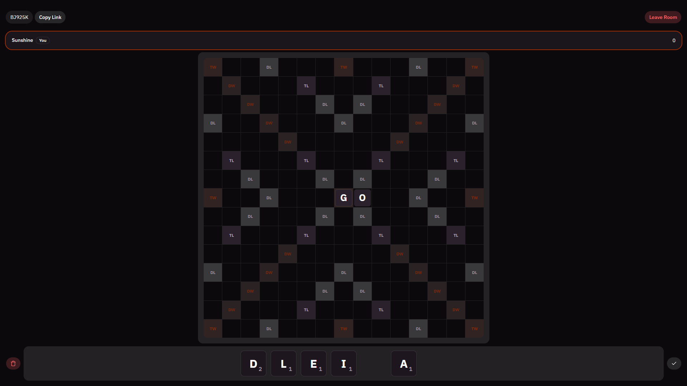

Oleksandr Hryhorchuk
i'm a frontend developer building react and typescript apps, independently and in teams. i'm open to frontend roles, remote or in tenerife.
currently: job hunting, shipping chum!

mova
real-time multiplayer word tile game